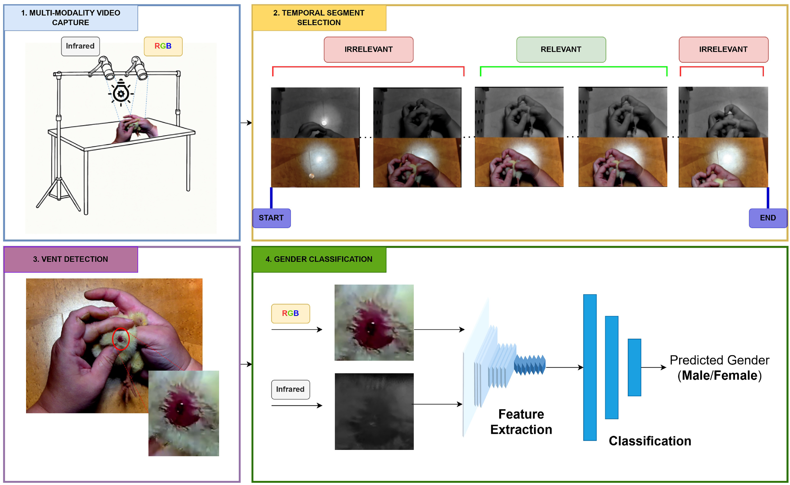
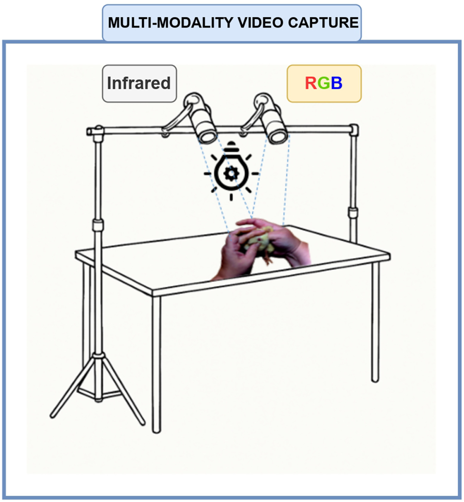
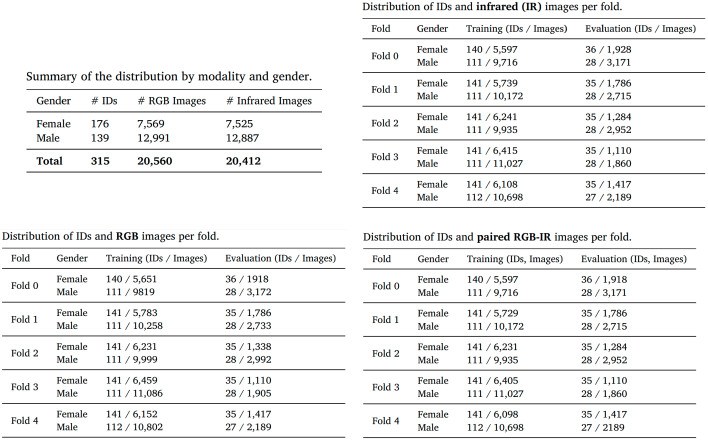
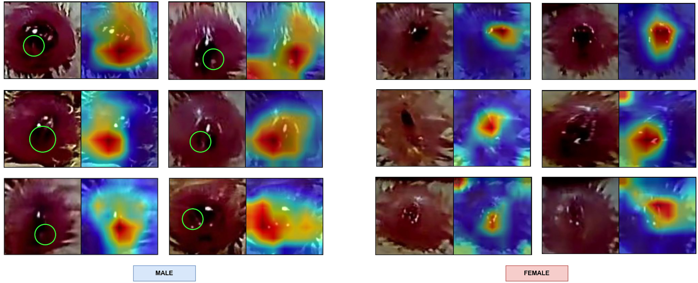
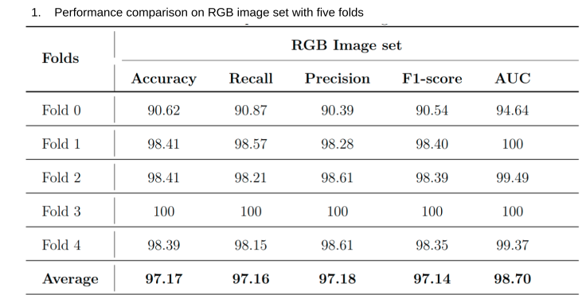
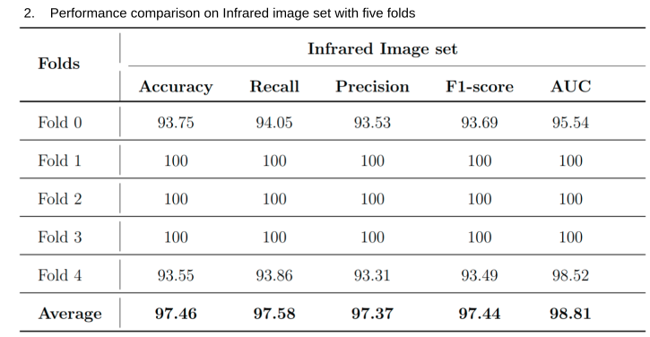
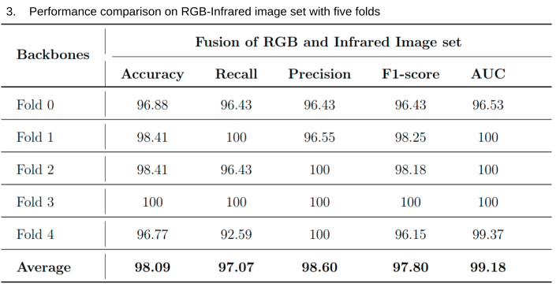

Chick sexing has been a crucial practice for many years due to the need for early gender identification in poultry production. Traditional methods, such as vent sexing, are highly effective but labor-intensive, requiring expert knowledge and years of training, making it a challenging and time-consuming process. Moreover, skilled professionals are increasingly scarce, making the process difficult to scale. To address this challenge, we proposed VentVision, an automated vision-based classification system that leverages computer vision and deep learning techniques to improve the efficiency and scalability of chick gender classification. Our system follows a four-step pipeline: multi-modality video capture, temporal segment selection, vent region detection, and gender classification, automating vent-based sexing. We evaluated our approach using RGB imaging, infrared (IR) imaging, and a multimodal RGB-IR feature-level fusion framework based on a dual-stream architecture. The multimodal model achieved an accuracy of 98.09%, outperforming single-modality approaches. These results demonstrate that VentVision achieves expert-level chick sexing performance while eliminating the need for years of specialized training, with manual handling limited to vent exposure, thereby simplifying the sexing workflow.
VentVision: A Multimodal Vision-Based System for Automated Vent-Based Chick Sexing
1 University of Arkansas · 2 Cobb-Vantress, Inc
Abstract
System overview

Experimental setup

Dataset statistics

Qualitative results

Quantitative results
Table 1 summarizes the RGB-based gender classification results across five folds. ResNet-50 achieves an average ID-level accuracy of 97.17%, with precision, recall, and F1-score also consistently exceeding 97%. Fold 3 reaches 100% accuracy, demonstrating that RGB images contain distinctive visual features for gender classification, while the lower accuracy in fold 0 may reflect greater variation in lighting and chick positioning.

Table 2 presents the infrared-based classification results. The model achieves a slightly higher average ID-level accuracy of 97.46%, with folds 1, 2, and 3 reaching 100%. Since predictions from multiple images are aggregated for each chick, the ID-level evaluation provides a more stable classification decision and demonstrates strong generalization to unseen individuals.

Table 3 reports the results of the RGB–infrared feature-fusion model, which jointly learns from paired features extracted by two ResNet-50 backbones. The multimodal approach achieves the best overall performance, with an average accuracy of 98.09%, precision of 98.60%, recall of 97.07%, F1-score of 97.80%, and AUC of 99.18%. No fold falls below 96% accuracy, and the fused model outperforms both RGB-only and infrared-only approaches, confirming that the two modalities provide complementary information and improve classification consistency and robustness.

BibTeX
@article{rodriguez2026ventvision,
title={VentVision: A Multimodal Vision-Based System for Automated Vent-Based Chick Sexing},
author={Rodriguez, Marta Veganzones and Phan, Thinh and Fernandes, ArthurF A and Breen, Vivian and Arango, Jesus and Kidd, Michael T and Le, Ngan},
journal={Smart Agricultural Technology},
pages={102236},
year={2026},
publisher={Elsevier}
}